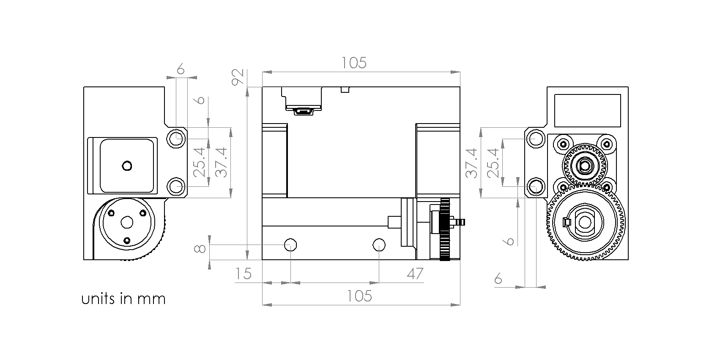
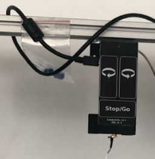

Mounting and Connecting#
Mounting#
The commutator should be mounted such that it is roughly centered over the behavioral arena. There are several holes in various positions around the commutator’s body that are compatible standard 80/20 aluminum extrusion using t-nuts or a standard mechanical breadboard. Not all the holes need to be used. Select the mounting holes that are convenient for your behavioral setup. For custom mounting solutions, the dimensions for the mounting holes (1/4”-20 or M6) are indicated in the below schematic:
Note
For clarity and planning, a 3D model of the commutator body is available on the git repository
If the commutator is used for an animal behavior experiment, mount it such that the animal can traverse the behavior setup’s full area given the length of your tether. Elastic thread can be utilized to prevent the tether from entering the animal’s field while the the animal moves around by catching the thread onto the gear hook and attaching it to the tether at various points using kapton tape.
Todo
image
Connecting#
Compatible Cables#
A variety of tethers are compatible with the commutator as long as they are terminated with a SMA connector (such as the Miniscope V4 tether) or something that can be adapted to a SMA connector (such as the headstage link) on the commutator end. A standard, high quality SMA-SMA cable (such as these from Open Ephys) can be used between the commutator and the data acquisition device.
Commutator Connectors#
There are three electrical interconnects on the commutator:
Micro-USB Connector:
The commutator receives power and communicates to another device (probably a computer) with serial communication (USB/UART) through this interconnect
Top SMA Connector:
The commutator’s stator connects to the stationary data acquisition device (DAQ) through this interconnect
Bottom SMA Connector:
The commutator’s rotor connects to the freely moving animal headstage through this interconnect
Attention
Some cheap Micro-USB cables only supply power. Ensure the cable used transfers both power and digital signals.
Source your coaxial cables from a reputable vendor such as Digikey, Mouser.
Source your coaxial tether from the Open Ephys or make your own using this guide.
For animal behavior experiments, manage cables such that they are not within range to interfere with the tether when the animal moves. For example:
Todo
Better image